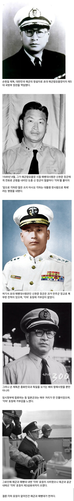
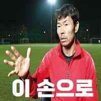

한국군 최초로 각하 호칭을 없앤 제독.jpg
댓글
장관급이나 장성은 대감이라 쓰면 어땠을까 생각합니다...
대감마님~
촤하하
좌하하하하하하
각하란 용어를 각하한다 각하하하하핳
각하말고 족하 했으면 싸대기 날렸을듯
어이 족하세요~?

최전방에서 소총 들고 참모총장 돌격을 직접 시전해버린 참군인
그럼 장군각하 라고 했나?
제독각하 사단장각하 이런 식임
각하로트
해병 초대사령관이 간도특설대 출신
대한민국 건국초 이야기 보면 눈물 나는게
저기 저 손원일 제독이 군함 엔진을 직접 고치더라 ㅠㅠ
엔진 만질줄 아는 사람이 아무도 없어
전보 보낼줄 아는 사람이 없어서 영부인이 직접 외교문서 전보 보냄
낭만 뒤지는데 그건
배운 엘리트 숫자가 적으니까 사단장이 바주카포 쏘고 해군참모총장이 스페너들고 엔진 고치고 대통령이 직접 문서 타이핑함.
해군가 대부분을 부부가 작곡작사했자너
백두산함 인수하러 3성 제독이 직접 날아가서 뱃값 깎고 배에서 먹고 자면서 페인트칠 하던걸 배 판매자가 보고 경악했다지 ㅋㅋㅋ
장병들 월급 모아서 산거아님?
솔직히 건국초 일본군이나 일본군이나 기술자 출신들을
기용한거 조금은 이해가 가는게 걔들이 없으면 사회 인프라 자체가 멈춰버려서
아무것도 못할거 같으니 기용할수밖에 없었을거 같음 ...
노덕술 같은 악질도 사면 기용한거 이해가 안갔는데 같이 활동한 경찰들이 단체로 사면 안하면 우리들 전부다 일안한다라고 질러버리니 방법이 없겠더라
나치독일 폰브라운도 자기 부하 동료들 사면 안하면 미국 안간다고 버팅기니 방법이 없더라. 폰브라운과 그 동료들이 유대인 강제노동 수만명을 시켰는데 아무도 처벌 안받음
“~하(下)” 호칭의 원리
이런 호칭은 '그 건물 아래(섬돌 아래)에 있는 시종에게 말을 건넨다'는 형식으로 상대를 높이는 간접 화법입니다. 임금께 직접 아뢰는 것이 황송하니 "전각 아래 있는 사람들에게 아뢴다"고 돌려 말하는 것입니다.
그러니까 전각에 사는 높은 사람에게 폐하 전하 저하 합하 각하 이렇게 부름
즉 이거지.
폐하 -> 니 이름은 '폐하'여(x)
폐하 -> 섬돌 아래에서 아무개가 아룁니다 (o)
원래는 접미어? 접미사? 인데 호칭으로 변한거네?
청와대 안에 살면 대하네 ㅋㅋㅋㅋㅋ
각하말고 인용이라 해씨야지!!
각하라는 단어 뭔가 쎄보이고 찰지긴해
마이 로드!
마시오 각하는 누구야!!
기각 ㅋㅋ
각하 호칭을 각하한다
각하는 잘 계시죠~?
으음~
함포로 다 때려부수기 전에
https://youtu.be/lzNKijtrqm4?si=ENdEgt0TfWygcWoO
해군의 아버지 작사 해군의 어머니 작곡
상선항해사가 해군총장이 된다는게 신기했음.
일본해군에 복무한 조선인이 없엇던건가
해군은 손원일 제독이 창설한 해방병단을 모체로 만든것임. 나라에서 해군을 만들고 사람을 뽑은게 아니라, 일단 개인이 조직을 만들고 나라에 해군으로 인정받은것에 가까움.
https://namu.wiki/w/%ED%95%B4%EB%B0%A9%EB%B3%91%EB%8B%A8
육군쪽도 저런 무장단체들이 많이 있었는데... "정부에 공인을 받자"는 생각을 아무도 안 했는지 전부 해산당했음. 해방병단은 만들때부터 미군정과 협의를 해서 해군이 되어 살아남았고.
마지막 사진은 몇 안되는 정모 턱끈을 실제로 사용한 사진이지.
좀 낮춰서 좌화를 썼으면 어땠을까